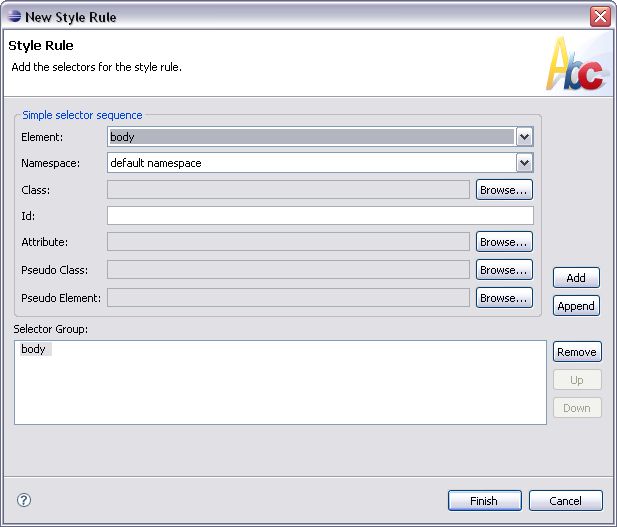
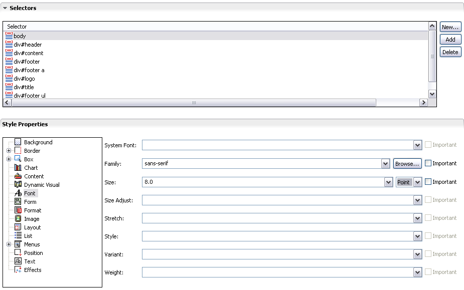
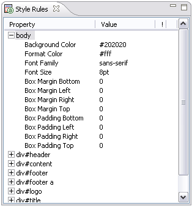

Next, we need to define the list of selectors used in our project, and then set style properties for them.
The selectors can be divided into three groups.
As an example, we will add the body selector to our theme.

You set properties in the Style Properties section of the editor. The properties are divided into categories, some of which you can expand if required.

The Style Rules view provides an alternative way to view all the rules for a particular theme variant. It contains a hierarchical list that displays the style rules, organized by selector sequence. Pick a selector to preview its properties.

The main.mthm theme has to define styles for the following selectors.
| Property | Control | Value |
|---|---|---|
| body | ||
| Font | Family | sans-serif |
| Size | 8pt | |
| Format | Color | #fff |
| Box Margin | All | 0 |
| Box Padding | All | 0 |
| Background | Color | #202020 |
| div#logo | ||
| Background | Image | /images/logo.mimg |
| Position | top left | |
| Repeat | no-repeat | |
| Color | #23516a | |
| Box | Height | 27px |
| div#heading | ||
| Background | Image | /images/bg-heading.mimg |
| Position | top left | |
| Repeat | repeat-y | |
| Color | #0c222e | |
| Text | Align | right |
| Box | Height | 10px |
| Border Width | Bottom | 1px |
| Border Style | Bottom | solid |
| Border Color | Bottom | #000 |
| div#title | ||
| Background | Image | /images/bg-title.mimg |
| Position | top left | |
| Repeat | no-repeat | |
| Color | #0a3d58 | |
| Box Padding | Top, Bottom | 2px |
| Left, Right | 6px | |
| Font | Weight | bolder |
| div#content | ||
| Background | Color | #202020 |
| Box Padding | All | 6px |
| div#footer | ||
| Background | Image | /images/bg-footer.mimg |
| Position | top | |
| Repeat | repeat-x | |
| Color | #202020 | |
| Box Padding | Top | 20px |
| Bottom | 6px | |
| Format | Color | #c5d7e1 |
| Box | Height | 100% |
| div#footer ul | ||
| list-style-type | square | |
| Box Margin | All | 0px |
| Box Padding | Left | 18px |
| div#footer a | ||
| Format | Color | #c5d7e1 |
| div#copyright | ||
| Background | Image | /images/bg-copyright.mimg |
| Repeat | repeat-x | |
| Text | Align | center |
| Format | Color | #7a7a7a |
| Box Padding | Bottom | 15px |
| widget|button, widget|dismiss, xforms|*::mcs-next, xforms|*::mcs-previous, xforms|*::mcs-cancel, xforms|submit, .button | ||
| Background | Image | /images/bg-button.mimg |
| Position | top left | |
| Repeat | repeat-x | |
| Color | #32444e | |
| Font | Weight | bolder |
| Family | sans-serif | |
| Size | 8pt | |
| Format | Color | white |
| Border Width | All | 0px |
| Box Padding | Top, Bottom | 2px |
| Left, Right | 4px | |
| Box Margin | Right | 4px |
| mcs-button-styl | custom | |
| widget|button:mcs-disabled, widget|dismiss:mcs-disabled, xforms|*::mcs-next:mcs-disabled, xforms|*::mcs-previous:mcs-disabled, xforms|*::mcs-cancel:mcs-disabled, xforms|submit:mcs-disabled, .button:mcs-disabled | ||
| Background | Image | none |
| Color | #32444e | |
| Format | Color | #999 |
| widget|button a, widget|dismiss a, xforms|*::mcs-next a, xforms|*::mcs-previous a, xforms|*::mcs-cancel a, xforms|submit a, .button a | ||
| Format | Color | #fff |
| widget|input, widget|select | ||
| Box Margin | Right | 4px |
| div.buttons | ||
| Box Padding | Top, Bottom | 5px |
| Left, Right | 0px | |
| .widget | ||
| Background | Color | #fff |
| Format | Color | #000 |
| Box Padding | All | 5px |
| Border Width | All | 1px |
| Border Style | All | solid |
| Border Color | All | #666 |
| .nowrap | ||
| Text | White Space | #fff |
| a | ||
| Text | Decoration | none |
| Format | Color | #000 |
| .error | ||
| Format | Color | red |
| xforms|input | ||
| Form | Columns | 12 |
| Box Margin | Left | 1em |
| widget|popup.rich-popup | ||
| Box | Width | 50% |
| left | 40% | |
| top | 10% | |
| Border Width | All | 1px |
| Border Style | All | solid |
| Border Color | All | #e5eaed |
| Background | Color | black |
| overflow | hidden | |
| Text | Align | center |
| Box Padding | All | 1px |
| widget|popup.rich-popup widget|dismiss.rich-dismiss | ||
| mcs-button-style | custom | |
| Box Padding | All | 0px |
| Box Margin | All | 0px |
| #myWeatherPresenter | ||
| Effects | Effect style | wipe-top |
| Effects | Effect Duration | 2s |
| Box Margin | Top | 5px |
| #myPresenter:mcs-concealed | ||
| Effects | Effect style | wipe-top |
| Effects | Effect Duration | 2s |
| #myFoldingItem::marker | ||
| Content | Content | mariner-component-url('/images/folded.mimg') |
| Position | Float | right |
| #myFoldingItem:mcs-unfolded::marker | ||
| Content | Content | content : mariner-component-url('/images/unfolded.mimg') |
| Position | Float | right |